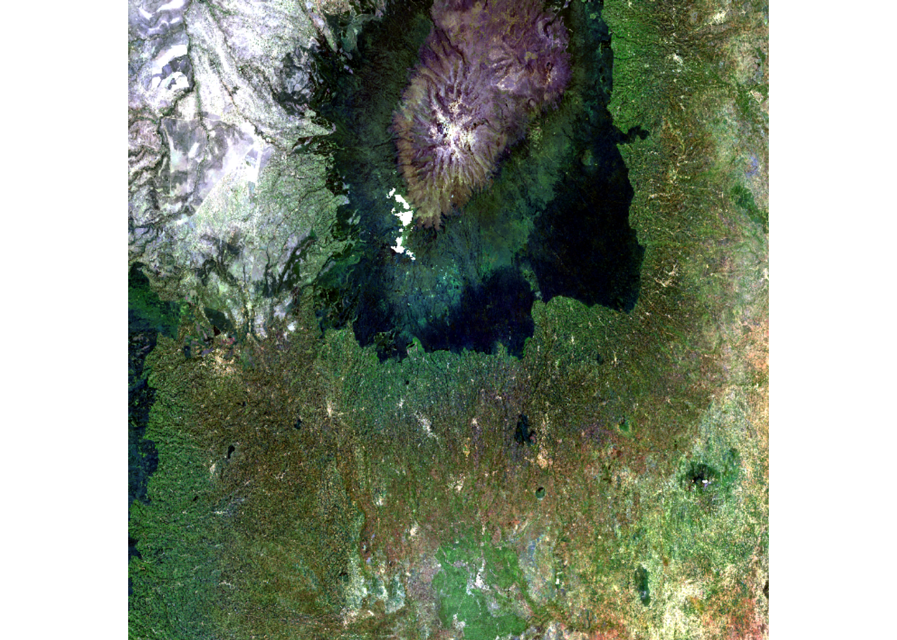

library(sf)## Linking to GEOS 3.9.3, GDAL 3.5.2, PROJ 8.2.1; sf_use_s2() is TRUElibrary(terra)## terra 1.7.71library(sits)## SITS - satellite image time series analysis.## Loaded sits v1.5.0.
## See ?sits for help, citation("sits") for use in publication.
## Documentation avaliable in https://e-sensing.github.io/sitsbook/.library(rstac)This script loads a geomedian, a product unique to DE Africa because it provides a cloud-free composite over a given period.
s_obj <- stac("https://explorer.digitalearth.africa/stac")
bbox <- c(36.74, -0.53, 37.43, -1.14)
url <- stac("https://explorer.digitalearth.africa/stac") %>%
stac_search(collections = "gm_ls8_ls9_annual",
bbox = bbox, datetime = "2021-01-01/2021-12-31", limit=40) %>%
get_request() %>% assets_select(asset_names=
c("SR_B2","SR_B3", "SR_B4", "SR_B5", "SR_B6", "SR_B7", "SMAD")) %>%
assets_url()
url## [1] "s3://deafrica-services/gm_ls8_ls9_annual/1-0-0/x217/y076/2021--P1Y/gm_ls8_ls9_annual_x217y076_2021--P1Y_SMAD.tif"
## [2] "s3://deafrica-services/gm_ls8_ls9_annual/1-0-0/x218/y075/2021--P1Y/gm_ls8_ls9_annual_x218y075_2021--P1Y_SMAD.tif"
## [3] "s3://deafrica-services/gm_ls8_ls9_annual/1-0-0/x218/y076/2021--P1Y/gm_ls8_ls9_annual_x218y076_2021--P1Y_SMAD.tif"
## [4] "s3://deafrica-services/gm_ls8_ls9_annual/1-0-0/x217/y075/2021--P1Y/gm_ls8_ls9_annual_x217y075_2021--P1Y_SMAD.tif"
## [5] "s3://deafrica-services/gm_ls8_ls9_annual/1-0-0/x217/y076/2021--P1Y/gm_ls8_ls9_annual_x217y076_2021--P1Y_SR_B2.tif"
## [6] "s3://deafrica-services/gm_ls8_ls9_annual/1-0-0/x218/y075/2021--P1Y/gm_ls8_ls9_annual_x218y075_2021--P1Y_SR_B2.tif"
## [7] "s3://deafrica-services/gm_ls8_ls9_annual/1-0-0/x218/y076/2021--P1Y/gm_ls8_ls9_annual_x218y076_2021--P1Y_SR_B2.tif"
## [8] "s3://deafrica-services/gm_ls8_ls9_annual/1-0-0/x217/y075/2021--P1Y/gm_ls8_ls9_annual_x217y075_2021--P1Y_SR_B2.tif"
## [9] "s3://deafrica-services/gm_ls8_ls9_annual/1-0-0/x217/y076/2021--P1Y/gm_ls8_ls9_annual_x217y076_2021--P1Y_SR_B3.tif"
## [10] "s3://deafrica-services/gm_ls8_ls9_annual/1-0-0/x218/y075/2021--P1Y/gm_ls8_ls9_annual_x218y075_2021--P1Y_SR_B3.tif"
## [11] "s3://deafrica-services/gm_ls8_ls9_annual/1-0-0/x218/y076/2021--P1Y/gm_ls8_ls9_annual_x218y076_2021--P1Y_SR_B3.tif"
## [12] "s3://deafrica-services/gm_ls8_ls9_annual/1-0-0/x217/y075/2021--P1Y/gm_ls8_ls9_annual_x217y075_2021--P1Y_SR_B3.tif"
## [13] "s3://deafrica-services/gm_ls8_ls9_annual/1-0-0/x217/y076/2021--P1Y/gm_ls8_ls9_annual_x217y076_2021--P1Y_SR_B4.tif"
## [14] "s3://deafrica-services/gm_ls8_ls9_annual/1-0-0/x218/y075/2021--P1Y/gm_ls8_ls9_annual_x218y075_2021--P1Y_SR_B4.tif"
## [15] "s3://deafrica-services/gm_ls8_ls9_annual/1-0-0/x218/y076/2021--P1Y/gm_ls8_ls9_annual_x218y076_2021--P1Y_SR_B4.tif"
## [16] "s3://deafrica-services/gm_ls8_ls9_annual/1-0-0/x217/y075/2021--P1Y/gm_ls8_ls9_annual_x217y075_2021--P1Y_SR_B4.tif"
## [17] "s3://deafrica-services/gm_ls8_ls9_annual/1-0-0/x217/y076/2021--P1Y/gm_ls8_ls9_annual_x217y076_2021--P1Y_SR_B5.tif"
## [18] "s3://deafrica-services/gm_ls8_ls9_annual/1-0-0/x218/y075/2021--P1Y/gm_ls8_ls9_annual_x218y075_2021--P1Y_SR_B5.tif"
## [19] "s3://deafrica-services/gm_ls8_ls9_annual/1-0-0/x218/y076/2021--P1Y/gm_ls8_ls9_annual_x218y076_2021--P1Y_SR_B5.tif"
## [20] "s3://deafrica-services/gm_ls8_ls9_annual/1-0-0/x217/y075/2021--P1Y/gm_ls8_ls9_annual_x217y075_2021--P1Y_SR_B5.tif"
## [21] "s3://deafrica-services/gm_ls8_ls9_annual/1-0-0/x217/y076/2021--P1Y/gm_ls8_ls9_annual_x217y076_2021--P1Y_SR_B6.tif"
## [22] "s3://deafrica-services/gm_ls8_ls9_annual/1-0-0/x218/y075/2021--P1Y/gm_ls8_ls9_annual_x218y075_2021--P1Y_SR_B6.tif"
## [23] "s3://deafrica-services/gm_ls8_ls9_annual/1-0-0/x218/y076/2021--P1Y/gm_ls8_ls9_annual_x218y076_2021--P1Y_SR_B6.tif"
## [24] "s3://deafrica-services/gm_ls8_ls9_annual/1-0-0/x217/y075/2021--P1Y/gm_ls8_ls9_annual_x217y075_2021--P1Y_SR_B6.tif"
## [25] "s3://deafrica-services/gm_ls8_ls9_annual/1-0-0/x217/y076/2021--P1Y/gm_ls8_ls9_annual_x217y076_2021--P1Y_SR_B7.tif"
## [26] "s3://deafrica-services/gm_ls8_ls9_annual/1-0-0/x218/y075/2021--P1Y/gm_ls8_ls9_annual_x218y075_2021--P1Y_SR_B7.tif"
## [27] "s3://deafrica-services/gm_ls8_ls9_annual/1-0-0/x218/y076/2021--P1Y/gm_ls8_ls9_annual_x218y076_2021--P1Y_SR_B7.tif"
## [28] "s3://deafrica-services/gm_ls8_ls9_annual/1-0-0/x217/y075/2021--P1Y/gm_ls8_ls9_annual_x217y075_2021--P1Y_SR_B7.tif"We will start with just one tile, selected below.
url <- url[grepl("y076", url) & grepl("x218", url)]
https <- "https://deafrica-services.s3.af-south-1.amazonaws.com"
url <- paste0(https, gsub( "s3://deafrica-services", "", url))We will rename the bands to make them more accessible.
stack <- rast(url)
names(stack)## [1] "gm_ls8_ls9_annual_x218y076_2021--P1Y_SMAD"
## [2] "gm_ls8_ls9_annual_x218y076_2021--P1Y_SR_B2"
## [3] "gm_ls8_ls9_annual_x218y076_2021--P1Y_SR_B3"
## [4] "gm_ls8_ls9_annual_x218y076_2021--P1Y_SR_B4"
## [5] "gm_ls8_ls9_annual_x218y076_2021--P1Y_SR_B5"
## [6] "gm_ls8_ls9_annual_x218y076_2021--P1Y_SR_B6"
## [7] "gm_ls8_ls9_annual_x218y076_2021--P1Y_SR_B7"names(stack) <- c('SMAD', 'B2', 'B3', 'B4', 'B5', 'B6', 'B7')Plot the RGB true-colour image of the geomedian.
plotRGB(stack, r= "B4", b = "B2", g = "B3", scale=8000, stretch= 'lin')
We can see that DE Africa’s unique geomedian is accessible in R.